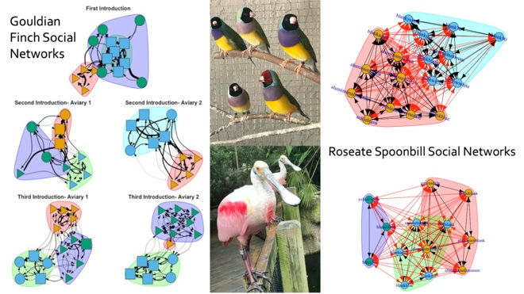
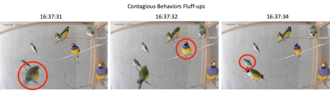
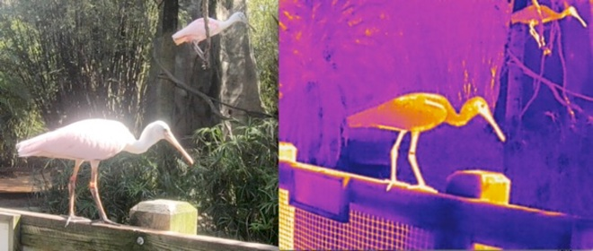
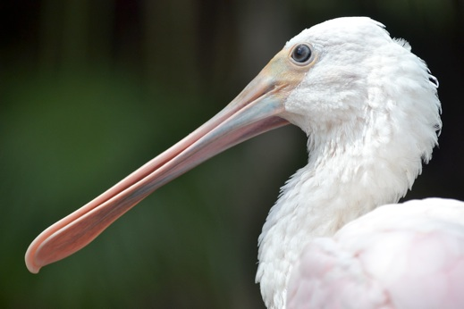

Research
Our lab investigates the causes and consequences of social interaction in complex environments. We seek to understand why individuals differ in their social interactions, how such differences develop, how these differences influence (or are influenced by) the organization of the group. A major focus of our research is quantifying how individuals experience and construct their social environments by observing social interaction across different levels: from measuring developmental changes in the moment-to-moment behavioral patterns used during interactions, to uncovering how individuals collectively shape the structure and stability of group social networks.
Development of social niches: When transitioning from the family group to the wider flock young birds must learn to navigate a range of social interactions to find their ‘niche’ in the flock. Flocks are not just random aggregations of birds, but show substantial organization as individuals express preferences regarding who to interact with, and how to interact with them. Young individuals enter the flock without well established preferences, and may develop them through their interactions with other flock members. In turn, the preferences they learn during this period will come to define the future organization of the flock that the next generation experiences. This long-term project is investigating the reciprocal influences of juvenile behavior and social organization during periods of social integration. By following individuals as they enter the flock we aim to show how the behavior of juveniles shapes the structure of social networks, and how flock social networks feedback to influence the development of juvenile social behavior.

Developing social synchronization: As autonomous agents, organisms must work to synchronize their behavior with others to gain the benefits of social life. The ability to synchronize your behavior with others is essential for almost all aspects of group life, from protection from predators to the formation of social relationships. Despite this, little is known about how synchronization emerges through the dynamic interaction between an organism and its social environment. This project is investigating how social synchronization develops in naturalistic flocks. Drawing from enactive approaches to animal cognition and behavior we follow individuals as they move through their family group to the wider flock showing how the dynamics of early groups shapes the development of synchronization.


Organismal Agency and Behavioral Novelty: Theoretically I am interested in the role of organismal agency in developmental systems and evolution. Organismal agency proposes that organisms have the capacity to act with the goal of constructing and maintaining themselves. I am involved in projects investigating how behavioral novelties provide opportunities to empirically situate organismal agency, and the challenges that agency proposes to the concept of innate behavior.
Selection from E. S. Russell’s book “The Behaviour of Animals” showing purposive behavior aimed to maintain a far-from equilibrium state in Arcella.
